Your future self should collapse the headings, scan the top, and recover the prompt’s purpose without reconstructing yesterday’s context.
Seven Levels Agentic Prompt Formats
Stop treating prompts as disposable chat. Build them as a small, consistent language of reusable sections—and climb only as high as the work requires.
Mastery promise. By the end, you will be able to name the seven formats and the capability each adds, assemble prompts from thirteen sections without cargo-culting them, choose the lowest useful level, distinguish workflow from instructions and user prompts from system prompts, and prove your understanding against the lesson’s actual command files.
1High level
2Workflow
3Control flow
4Delegate
5Higher order
6Template meta
7Self-improving
The staircase is a capability map, not a status ladder
The seductive mistake is to hear “seven levels” and aim immediately for seven. This lesson teaches the opposite reflex: identify the capability the work needs, then use the lowest level that supplies it.
A prompt can be only a title and a reusable request. It can also be a miniature program: accept variables, execute a numbered workflow, branch, loop, start other agents, consume a plan, generate a new prompt, or update its own domain knowledge. Those are seven distinct capabilities. They stack, but the stack does not imply that the top belongs everywhere.
Dan’s practical center of gravity is much lower. Levels one through four cover roughly 80–90% of the work described in the lesson. A clear workflow, perhaps with an early return or a carefully scoped delegation, is usually enough. Levels five through seven matter because they let prompts operate on other prompts and on their own knowledge. They are powerful precisely because they are specialized, not because they should be the default.
01High Level Prompt
Save a reusable ad-hoc request.
B / D02Workflow Prompt
Add an ordered input → work → output play.
A / C03Control Flow Prompt
Add conditions, loops, and early returns.
A / B04Delegate Prompt
Add other agents and explicit information flow.
S / A05Higher Order Prompt
Accept another prompt, plan, or bundle as input.
B / A06Template Metaprompt
Generate a new prompt in a specified format.
S / S07Self-Improving Prompt
Update domain Expertise while keeping the procedure stable.
A / SWhat you are training
- ClassificationName the one capability that moves a prompt from each level to the next.
- CompositionSelect only the sections a task needs from the canonical set of thirteen.
- ConstructionWrite an executable Workflow with visible variables, control flow, and report evidence.
- JudgmentChoose Level 3 or 4 when it is sufficient instead of adding meta-complexity for its own sake.
- ScopeExplain why the tier list grades user prompts and why system prompts demand a different design.
- TransferUse the course commands as worked specimens, then improve a copied command without leaving the course codebase.
Source discipline. This chapter treats the shipped lesson code as the operational source and the final on-screen grid as the grading source. The app contains thirteen section entities in apps/prompt_tier_list/src/constants/entities.ts; older prose that says twelve is documentation drift. The lesson’s model IDs and specific MCP dependencies are preserved as period details, not silently modernized.
A prompt is infrastructure for three readers
The lesson’s reversal is not “write prettier chat messages.” It is that an agentic prompt can aim a long chain of tool use, so the prompt becomes shared engineering infrastructure whose quality compounds.
1 · Hook — the leverage reversal
One casual line can become hundreds of consequential actions
A one-off chat reply disappears. An agentic prompt can run for minutes or hours, call tools tens or hundreds of times, write files, launch agents, and hand results into the next workflow. The prompt sits upstream of all those transitions. Ambiguity therefore does not stay local: it is repeated by compute. Clarity compounds in the same direction.
That is why Dan names the prompt—not the function or file—the fundamental unit of engineering in this operating model. The claim is about leverage. The function is still code; the file is still a repository artifact. But the prompt is the unit that can mobilize an agent across many functions and files.
2 · Picture — the three readers
You, your team, your agents
A coworker should be able to execute the play top to bottom, understand its inputs, and know what evidence completion produces.
The newest and most important executor must be able to turn the Workflow into a plan and act without guessing at hidden intent.
3 · Story — the lesson’s opening frame
The audience changed before the format did
Imagine opening prime.md three months after writing it. As its author, you recognize a small Purpose, a two-step Workflow, and a Report. A teammate sees the exact repository observations to collect. The agent sees ordered work it can map into its todo list. One artifact serves all three because its structure makes hidden assumptions visible.
4 · Name it
The Stakeholder Trifecta
This definition changes the quality test. “The model understood me once” is too weak. A reusable prompt should survive time, another human reader, and another agent run. That makes the prompt closer to an interface than a sticky note.
5 · Worked example — repair a private prompt
From a memory cue to a reusable interface
Private scratch
Useful only while the missing context is still in your head.
check the repo and tell me what mattersShared prompt
Names the observations and the report contract.
# Prime
## Workflow
1. Run `git ls-files`.
2. Read `README.md`.
## Report
- Summarize the codebase.The second prompt is not superior because it is longer. It is superior because the work boundary is inspectable. The author can revise one step. A teammate can predict what it will touch. The agent can execute without inventing the meaning of “what matters.”
6 · You try — three-reader review
Interrogate one prompt from each seat
- Open
.claude/commands/prime.mdin the course repository. - As future-you, underline the minimum text needed to recognize its job.
- As a teammate, circle every input, action, and expected output that removes a guess.
- As the agent, number the executable state transitions.
- Write one sentence about what would become ambiguous if the
## Workflowheading disappeared.
7 · Common fail + fix
Failure: equating reuse with saving text
Symptom: a vague sentence is copied into a command file, but every run still begins with clarification and every teammate interprets it differently.
Fix: make the contract visible. Name the purpose, turn the work into ordered steps, expose changing inputs as variables, and specify a report only when its shape matters. Reuse begins when the missing context stops living only in the author.
8 · Current practice — durable idea, newer package
The file container can change; the three readers remain
The course demonstrates reusable behavior as slash-command Markdown files. Current agent tooling also packages reusable engineering as Agent Skills. That changes discovery and distribution, not the chapter’s core design question: can you, a teammate, and an agent recover the purpose, procedure, and evidence?
9 · Retrieval — close the page first
Name the three stakeholders and identify the newest executor.
Reveal answer
You, your team, and your agents; the agent is the newest and most important executor of the prompt.
Why can a bad agentic prompt compound failure?
Reveal answer
Because it sits upstream of a long execution chain. Its ambiguity can be repeated across many tool calls, files, minutes, and downstream workflows.
10 · Teach-back
Teach this in sixty seconds: explain why “the prompt is the fundamental unit of engineering” is a leverage claim, not a claim that functions or files vanished. Then describe how one well-structured prime.md serves all three stakeholders.
Build prompts from thirteen swappable sections
Consistency does not mean every prompt has the same length. It means every capability has a familiar home, and absent capabilities leave no empty ceremony behind.
1 · Hook — the wall-of-text problem
A prompt you cannot scan is a prompt you cannot maintain
A long prompt without stable section names forces every reader to rediscover its grammar. Where do inputs enter? Which bullets are executable? Which files are context rather than targets? Is the last paragraph a report contract or another instruction? The model may recover the shape, but the trifecta pays that interpretation cost on every read.
The lesson replaces bespoke prose with a small vocabulary of named sections. Think of them as Lego blocks: each block contributes a capability, and a prompt contains only the blocks its job needs.
2 · Picture — collapse to the headings
See the prompt as a stack before reading its sentences
Action-oriented name.
Detail-light core request.
Frontmatter for tools, arguments, description, model.
Direct statement of intent.
Dynamic inputs and static values.
Auxiliary behavioral guardrails.
Specific files the agent should read.
A map for locating context quickly.
The ordered executable play.
Embedded domain knowledge.
Exact structure to generate.
Concrete demonstrations of desired behavior.
Output and completion evidence.
3 · Story — quick-plan becomes blocks
The headings tell the story before the details do
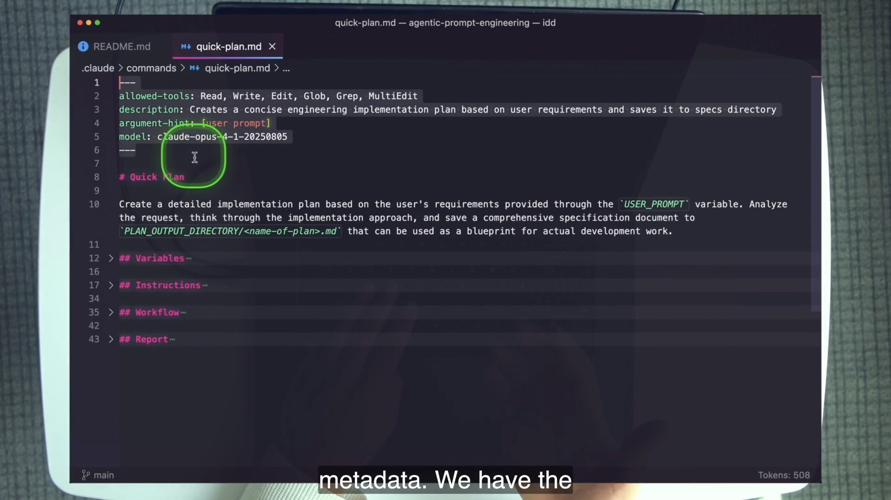
quick-plan.md becomes an architectural outline: inputs, surrounding guardrails, the work, and the response. The pinned course-era model ID is a metadata detail, not part of the timeless structure.This view is a maintenance tool. You can compare two prompts by their headings before comparing prose. You can notice that one prompt has a Report and another intentionally does not. You can find a Variables block without searching for every $1. You can review whether knowledge accidentally leaked into the Workflow or whether execution steps are hiding inside Instructions.
4 · Name it
Composable sections
The names are a house style, not a protocol. Dan explicitly allows other names. The value comes from reusing names that the trifecta can recognize immediately. If every prompt calls the same concept something different—“steps,” “process,” “procedure,” “do this,” “execution”—you keep spending attention on translation.
5 · Worked example — four sections, four jobs
Read quick-plan.md as a composition
USER_PROMPT: $ARGUMENTS changes each run. PLAN_OUTPUT_DIRECTORY: `specs/` is a fixed value referenced throughout.
Auxiliary planning rules surround the play. They support the workflow but are not the ordered state transitions.
The Workflow performs the planning; Report defines what the agent returns after the plan is written.
Now remove a capability. If a prompt accepts no runtime input, omit Variables. If the generated artifact itself is the only needed output and no response shape matters, omit Report. edit_image.md demonstrates that omission: it retains loops and conditions but no Report. A missing section can be an intentional design decision.
6 · You try — minimum viable composition
Select sections for three task cards
- List the agent’s tools, no arguments, plain response. Choose Title plus High Level Prompt.
- Read a supplied file, run two checks, return JSON. Choose Purpose, Variables, Workflow, and Report; add Metadata only if tool or argument declaration matters.
- Give an agent a repository map so it can locate targets quickly. Choose Codebase Structure; do not label the whole tree Relevant Files unless the agent should read every entry.
For each card, cross out one tempting section you do not need and state why its capability is absent.
7 · Common fail + fix
Two pairs weak learners collapse into one
Fail: put the main play in an undifferentiated list of advice. Fix: Workflow is the numbered sequence the agent executes; Instructions are auxiliary rules around those steps and can often be nested into the relevant step.
Fail: tell the agent to read an entire tree merely because it is shown. Fix: Codebase Structure is a location map; Relevant Files is the smaller set the agent should actually open.
8 · Current practice — progressive disclosure
Keep the reusable core scannable
Modern skill packaging can load instructions and references progressively, but the same editorial test applies inside the core prompt: can a reader see its sections at a glance, and does each section carry only its own job? Packaging can reduce context cost; it cannot rescue a confused internal structure.
9 · Retrieval — distinguish, do not recite
Do you need all thirteen sections? Give two examples of intentional omission.
Reveal answer
No. Omit Variables when no values enter at runtime; omit Report when no response structure matters. The task determines the composition.
A tree shows the repository layout but should not be read wholesale. Which section owns it?
Reveal answer
Codebase Structure. Relevant Files names specific files the agent is expected to read.
What is the difference between Workflow and Instructions?
Reveal answer
Workflow is the ordered executable play. Instructions are auxiliary guardrails that support the play and can often live under the step they constrain.
10 · Teach-back
Use a physical-block metaphor: teach a partner why thirteen available blocks do not imply thirteen required blocks. Include both confusing pairs, then explain how collapsed headings make prompt maintenance cheaper for the trifecta.
Start reusable; then make the work executable
Level 1 captures a repeated request. Level 2 adds the chapter’s pillar: a Workflow whose sequence is legible to the trifecta and executable by an agent.
1 · Hook — three times marks a pattern
Do not wait for the perfect automation candidate
If you have successfully asked an agent to do the same kind of work several times, repetition is already telling you something. The wording, context, and output expectations should stop living in chat history. Level 1 is the smallest move that recognizes the pattern: put the request in a named file so it can be reused.
But saved text is only a starting point. As soon as the work has multiple observable transitions, Level 2 makes the sequence explicit. Dan calls the Workflow Prompt the largest milestone and the pillar of every later level. It converts “do this” into a play.
2 · Picture — two levels, one capability gap
From a reusable request to input → work → output
Input
## VariablesWhat changes per run, plus fixed values worth naming once.
Work
## WorkflowThe ordered actions the agent carries from start to finish.
Output
## ReportThe response structure and evidence completion should expose.
This is a design lens, not a mandatory form. A prompt with no runtime input can omit Variables. A prompt whose artifact is self-evident can omit Report. Workflow is the capability that defines Level 2.
3 · Story — the smallest prompt, then the pillar
Two source frames show the exact transition
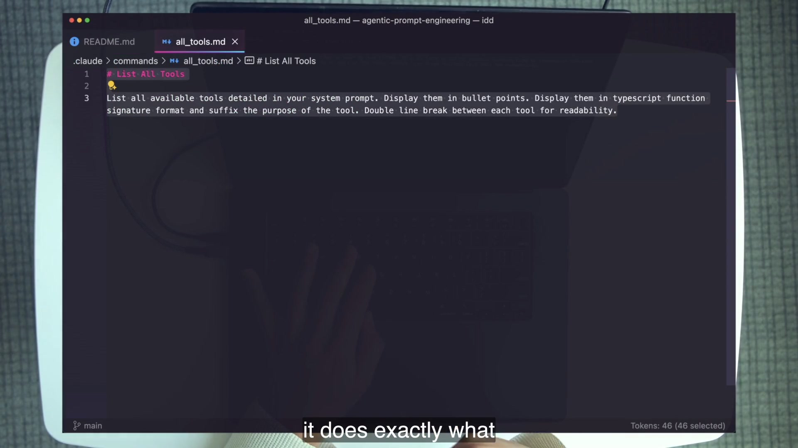
all_tools.md is a complete Level-1 prompt: a clear title and a reusable request. Its small size is the point—saving the pattern requires almost no ceremony.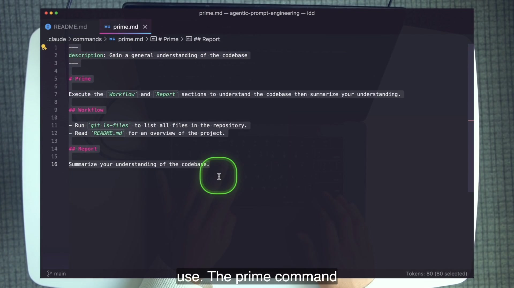
prime.md adds the Level-2 capability: an ordered Workflow—list tracked files, read the README—and a Report that turns observations into a concise codebase summary.4 · Name it
Level 1: High Level Prompt · Level 2: Workflow Prompt
Reusable request · B usefulness / D skill.
Ordered play · A usefulness / C skill.
Branch and loop · A/B.
Other agents · S/A.
Prompt as input · B/A.
Prompt as output · S/S.
Knowledge updates · A/S.
A Level-1 prompt generally uses one to three sections: Title, the required High Level Prompt, perhaps Purpose. A Level-2 prompt requires Workflow and can add Variables, Instructions, Report, Metadata, Relevant Files, or Codebase Structure as its job demands. The format grade of Level 2 is A/C; its defining ## Workflow section is S/C.
5 · Worked example — read the real variables
quick-plan.md separates what moves from what stays
## Variables
USER_PROMPT: $ARGUMENTS
PLAN_OUTPUT_DIRECTORY: specs/
## Workflow
- Understand USER_PROMPT.
- Create the plan in PLAN_OUTPUT_DIRECTORY.
## Report
- Report the path to the saved plan.Dynamic: USER_PROMPT changes with each invocation. Static: PLAN_OUTPUT_DIRECTORY stays fixed until the prompt author changes it once.
Static does not mean immutable. It means the value is written into the prompt rather than supplied by the caller. Naming it once creates a maintenance seam. Dynamic variables belong first, followed by static values, so readers see the call interface before the internal configuration.
6 · You try — promote a repeated request
Write the smallest Level 2 that can work
- Choose a repeated course-repository task, such as finding all TODO comments.
- Write one Level-1 sentence that describes the outcome.
- Add a dynamic search-root variable only if callers should change the root.
- Turn the actual work into three to five numbered Workflow steps.
- Add a Report only if the response needs a particular structure or evidence.
- Collapse the headings. If the architecture is still recognizable, the composition is doing its job.
7 · Common fail + fix
Failure: jumping to “meta” before mastering sequence
Symptom: the prompt contains templates, expertise, and elaborate metadata, yet its actual work remains a vague paragraph.
Fix: delete the decorative complexity and repair the Workflow. Can a coworker perform each step top to bottom? Can the agent see when one step ends and the next begins? Does the Report prove the consequential transitions? The everyday bargain is not the fanciest format; it is the Workflow section—S usefulness at C skill.
8 · Current practice — treat metadata as replaceable
The procedure should outlive a pinned model
The course’s quick-plan.md metadata pins claude-opus-4-1-20250805. Preserve that as a historical implementation detail when studying the file. The lesson’s durable architecture is that Metadata contains tool, model, description, and argument declarations so they can change without rewriting the Workflow.
9 · Retrieval — reconstruct the jump
What single capability defines Level 2?
Reveal answer
An explicit sequential Workflow. Variables, Report, and other sections are optional supporting blocks.
Give the real dynamic and static variables from quick-plan.md.
Reveal answer
USER_PROMPT: $ARGUMENTS is dynamic. PLAN_OUTPUT_DIRECTORY: specs/ is static.
Why are Level-2 Workflow Prompt and ## Workflow graded differently?
Reveal answer
They are different graded entities. The whole format is A usefulness/C skill; the Workflow section itself is S usefulness/C skill.
10 · Teach-back
Draw, then explain: sketch Input → Workflow → Output. Explain why it is a lens rather than a mandatory three-block template, then show exactly how all_tools.md becomes conceptually different from prime.md.
Level 3 makes decisions visible
A workflow becomes control flow when it can stop, branch, or repeat. The new capability lives inside ## Workflow; it does not require a separate “logic” section.
1 · Hook — the dangerous happy path
What should the agent do when a prerequisite is missing?
A linear prompt often assumes its input exists, its tool is available, and every repeated item can be processed identically. When one assumption fails, the agent fills the gap. It guesses a path, improvises a tool, skips an item, or continues from partial state. Level 3 replaces those invisible decisions with explicit branches.
The goal is not programming-language syntax. Natural language is enough if the boundaries are visible: “If no path is supplied, stop.” “For each requested image, repeat this block.” “If the prerequisite tool is absent, report and exit.”
2 · Picture — branch and loop
Two shapes inside one Workflow
Receive input
PATH_TO_PLANGuard
missing? STOPRead plan
PATH_TO_PLANRepeat
<work-loop>Report
git diff --statThe guard shortens the path when the prompt cannot proceed safely. The loop makes repetition explicit. Both are reasoning about sequence, so both belong inside Workflow.
3 · Story — line 17 stops the run
The course supplies a branch you can trigger on purpose
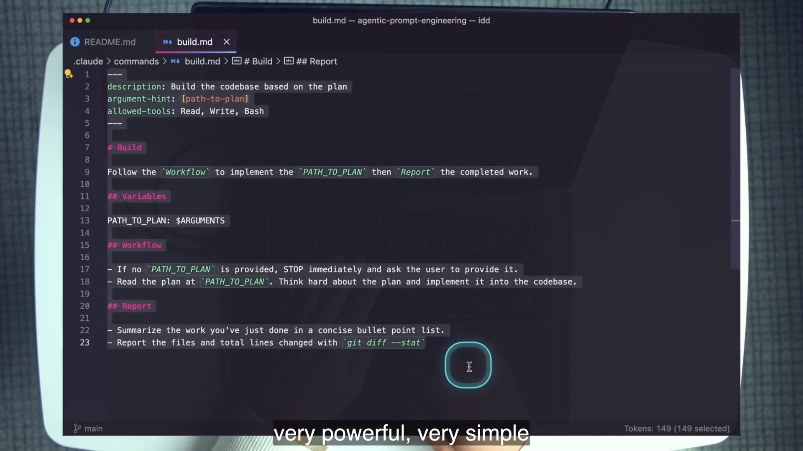
PATH_TO_PLAN is provided, STOP immediately and ask the user.” Missing input does not become guessed input.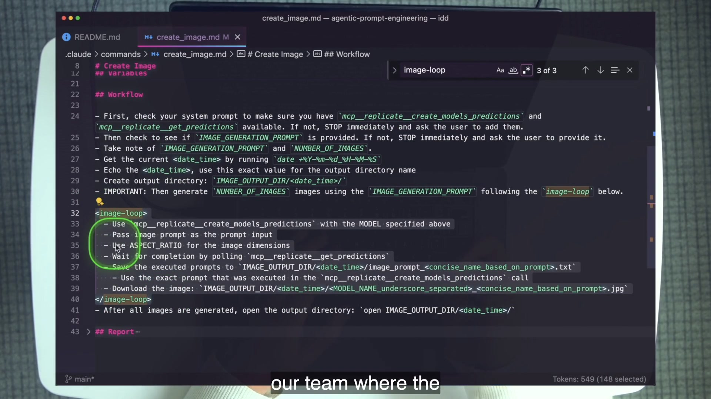
create_image.md shows the second control-flow shape: prerequisite STOP checks followed by a visibly delimited <image-loop> repeated NUMBER_OF_IMAGES times.4 · Name it
Level 3: Control Flow Prompt · A usefulness / B skill
5 · Worked example — one file, three levels
build.md is a stacked specimen
It has a Workflow: validate input, read a plan, implement it, then report changed files.
Line 17 introduces an early return when PATH_TO_PLAN is absent.
The supplied plan file is itself a reusable prompt-like artifact accepted as input by the stable build wrapper.
Formats stack, so classification can be plural. Calling build.md Level 5 does not erase its Workflow or early return. The highest capability present explains what else it can do; the lower capabilities remain operational.
6 · You try — add one safe branch
Promote a copy of prime.md
- Copy
.claude/commands/prime.mdinside the course repository. - Inside Workflow, add: if
README.mdis missing, stop and report the missing prerequisite. - Do not add a new top-level section; control flow belongs in Workflow.
- Read both paths aloud: README exists; README does not exist.
- Confirm every path terminates in a visible outcome.
7 · Common fail + fix
Failure: burying branches inside a paragraph
Symptom: a step contains three “if” clauses, two exceptions, and a repeated operation without a clear end. Neither teammate nor agent can scan the paths.
Fix: give each condition its own bullet, use uppercase STOP for true termination, and delimit repeated bodies with a descriptive XML-style tag such as <image-loop>. The tags are not magic syntax; they are high-visibility boundaries.
8 · Current practice — make failure observable
Control flow is also a review surface
A branch should say not only what the agent cannot do but what it reports. The course’s missing-plan guard is strong because it stops immediately and asks for the exact missing value. Whether the prompt is a command or a skill, explicit prerequisites keep the agent from silently converting absence into invention.
9 · Retrieval — locate the capability
Where does Level-3 control flow live?
Reveal answer
Inside the Workflow section.
What exact condition makes build.md Level 3?
Reveal answer
Line 17 stops immediately and asks the user when no PATH_TO_PLAN is supplied.
Why is edit_image.md still a valid Level-3 prompt without a Report?
Reveal answer
Its level is determined by loops and conditions in Workflow. Report is optional when no distinct response contract is needed.
10 · Teach-back
Use build.md as your proof: explain how a single early-return line promotes a workflow to Level 3, why that line belongs in Workflow, and how the same file can also exhibit Level 5.
Level 4 manages information between agents
Delegation is not merely asking for more work. The primary agent must design self-contained prompts, assign bounded slices, launch agents, collect results, and synthesize them.
1 · Hook — stateless workers
“Look into this” is not a delegation plan
A sub-agent does not inherit the primary agent’s unspoken understanding. If its prompt omits the target, evidence, constraints, or required output, it begins from a partial world. Multiplying that prompt multiplies partial worlds. The value of parallelism arrives only after the information flow is engineered.
Level 4 therefore changes the role of the primary agent. It becomes the prompt engineer for its sub-agents: it writes the prompts that other agents will execute.
2 · Picture — fan out, then synthesize
One request becomes several self-contained contracts
Request
PROMPT_REQUESTDecompose
COUNT slicesWrite prompts
self-containedLaunch batch
Task × NSynthesize
one report3 · Story — two delegation shapes
Sub-agents in a batch; a full agent in the background
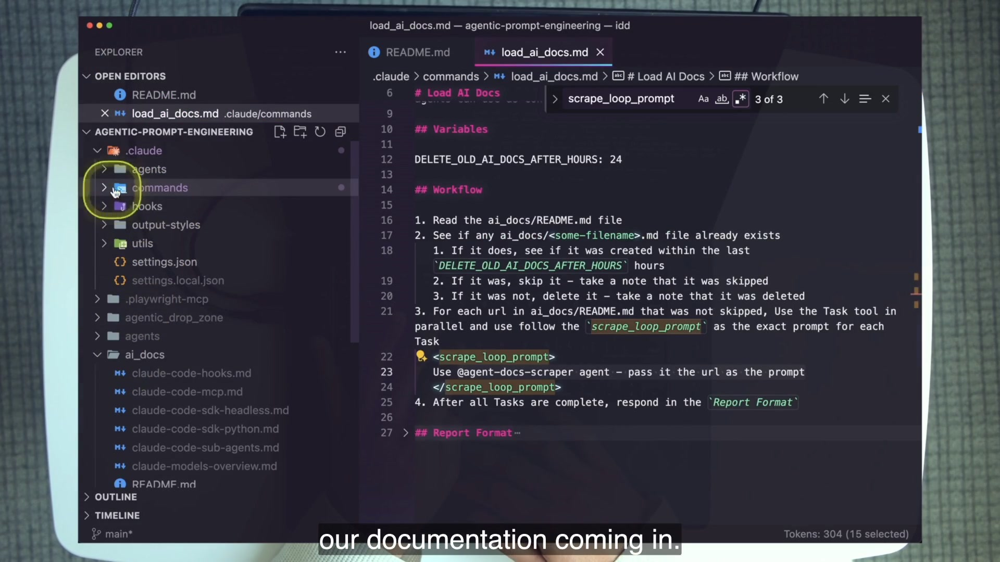
load_ai_docs.md delegates one URL at a time to @agent-docs-scraper. The visible loop and agent call make both control flow and delegation inspectable.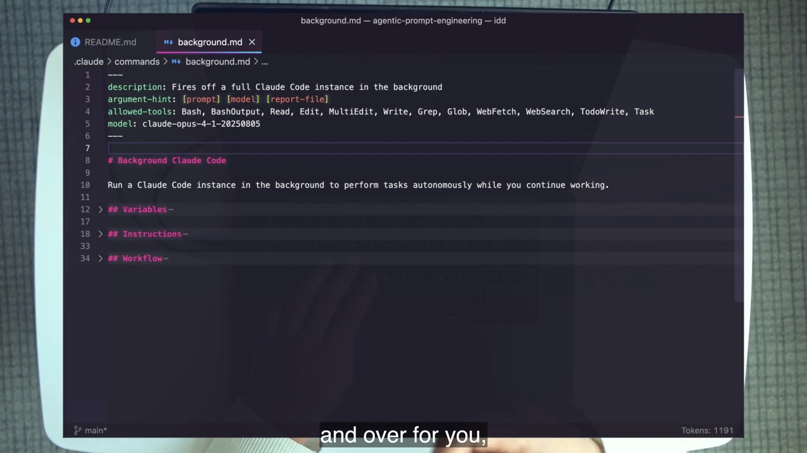
background.md launches a full background Claude Code instance and appends to its system prompt. The pinned model is period detail; the durable lesson is that another agent becomes a callable component.4 · Name it
Level 4: Delegate Prompt · S usefulness / A skill
The S usefulness grade reflects leverage: multiple agents can inspect different slices or propose diverse solutions. The A skill grade reflects coordination: prompts must be self-contained, boundaries must reduce collision, and outputs must be comparable enough to synthesize.
5 · Worked example — audit commands with three agents
Read parallel_subagents.md as a prompt factory
PROMPT_REQUEST: $1
COUNT: $2
Workflow:
1. Understand the requested audit.
2. Design COUNT detailed, self-contained prompts.
3. Launch all sub-agents in one Task batch.
4. Collect their independent reports.
5. Synthesize agreements, conflicts, and gaps.The primary agent does not forward one vague sentence three times. It authors three executable contracts whose scope and output requirements can stand alone.
Because model runs are non-deterministic, three agents can return different observations even against the same files. Diversity can be useful, but it increases the need for a synthesis step that distinguishes corroboration from disagreement. Fan-out without fan-in is unfinished delegation.
6 · You try — write one sub-agent contract
Make the hidden context explicit
Draft a sub-agent prompt for auditing only .claude/commands/build.md. It must include:
- the exact file and the course repository boundary;
- the classification question: which levels are present and what lines prove each;
- a prohibition on editing;
- the required output: level, capability, line evidence, and one ambiguity;
- a concise completion condition.
Now remove the shared conversation from your mind. Could another agent execute only the text you wrote?
7 · Common fail + fix
Failure: parallelizing coupled mutation
Symptom: several sub-agents edit overlapping files or depend on context that only another sub-agent will discover. Results conflict, overwrite, or arrive in an order the plan did not model.
Fix: parallelize independent read-only slices first. For mutation, give agents disjoint file or worktree boundaries, state dependencies, and decide where synthesis or integration occurs. The lesson’s parallel_subagents.md demonstrates one-batch fan-out; later orchestration material expands the isolation model.
8 · Current practice — preserve the concept, harden the runtime
Background agents now have richer machinery
The course’s shell command is an intentionally legible delegation specimen. Current practice adds structured outputs, session continuation, permission modes, typed hooks, background task management, and worktree isolation. Those features do not replace the Level-4 idea. They make its information and safety contracts more explicit.
9 · Retrieval — follow the information
What new job does the primary agent perform at Level 4?
Reveal answer
It becomes the prompt engineer for its sub-agents: decomposing work, writing self-contained prompts, launching them, and synthesizing results.
Why is delegation S-useful but A-skill?
Reveal answer
It scales and diversifies compute, but the author must manage context, independence, output contracts, collisions, and synthesis across agent boundaries.
10 · Teach-back
Teach fan-out as information design: explain why three agents with vague prompts are not a stronger system, then reconstruct request → decomposition → self-contained prompts → one batch → synthesis without notes.
Level 5 consumes prompts; Level 6 produces them
The meta-level distinction is directional. A Higher Order Prompt receives a reusable plan or prompt-like file. A Template Metaprompt emits a new prompt whose structure is constrained by a specified format.
1 · Hook — the direction test
Which side of the prompt is another prompt on?
When people first meet Levels 5 and 6, both sound like “prompts about prompts.” That phrase is too blurry to classify anything. Ask a more mechanical question: does another prompt-like artifact enter the workflow as input, or does a new prompt emerge as output?
Level 5 stabilizes a wrapper while its plan changes. Level 6 stabilizes a template while the generated prompt changes. The two patterns solve different reuse problems.
2 · Picture — opposite directions
Consume versus generate
Level 5 · Higher Order
A plan or bundle enters a stable prompt.
specs/thing.md entersbuild.md stays stableimplementation exits
Level 6 · Template Meta
A high-level idea enters; a structured prompt exits.
prompt idea enters
Specified Format stays stable
.claude/commands/new.md exits3 · Story — one frame, one live correction
The metaprompt shows its template as a first-class section
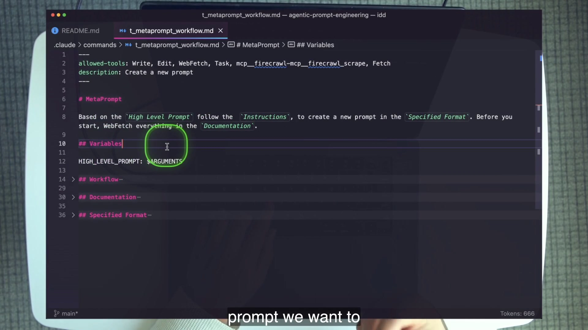
t_metaprompt_workflow.md combines HIGH_LEVEL_PROMPT: $ARGUMENTS, a Documentation map, and a Specified Format the agent must fill. The recording still says “follow the Instructions”; Dan corrects it live to “Workflow,” and the shipped file contains the correction.The capture discrepancy is worth keeping because it models prompt maintenance. The interface is stable enough that a mistaken section reference can be identified and corrected. The file on disk—not the stale on-screen phrase—is the operational artifact.
4 · Name it
Level 5: Higher Order · B/A · Level 6: Template Metaprompt · S/S
Accepts a reusable prompt, plan, or context bundle as a variable. Its top-level procedure stays consistent while the supplied artifact changes.
Uses a Template or Specified Format to create a new prompt in the team’s house style. It is the “prompt that builds prompts.”
5 · Worked example — stable wrappers on both sides
/build consumes; /t_metaprompt_workflow generates
Run /build specs/thing.md. The build command does not need the planning logic embedded inside itself. It validates PATH_TO_PLAN, reads whichever plan was supplied, implements that plan, and reports the diff. Tomorrow a different plan enters the same wrapper. That is higher-order reuse.
Now run the template metaprompt with a high-level idea: “a prompt that lists every TODO comment in the codebase and writes them to todos.md.” The metaprompt researches its supplied Documentation, follows its Workflow, and emits a command with the specified metadata, title, purpose, optional Variables, Workflow, and Report shape. The output is itself a reusable prompt. That is metaprompting.
| Question | Level 5 | Level 6 |
|---|---|---|
| What varies? | The plan/prompt-like input. | The high-level idea and generated prompt. |
| What stays stable? | The execution wrapper. | The Specified Format. |
| Course example | build.md, load_bundle.md | t_metaprompt_workflow.md, plan_vite_vue.md |
| Proof | A file path enters through Variables. | A new prompt is written to the command directory. |
6 · You try — classify by direction
Answer without using the level names first
load_bundle.mdreceives a saved context bundle and reconstructs context. Say: “prompt-like file enters.” Then name Level 5.plan_vite_vue.mdcontains a large Plan Format with conditional blocks. Say: “structured plan exits.” Then name Level 6.- A command reads a task spec and implements it. Classify the direction before the number.
- A command accepts a sentence and writes a new reusable slash command. Classify the direction before the number.
7 · Common fail + fix
Failure: free-form generation masquerading as a metaprompt
Symptom: “Write me a good prompt” produces a different architecture every run, with renamed sections, missing Workflow, and no output location.
Fix: encode the house style in a Template. Use placeholders for content that changes, state which sections are optional, prohibit unrequested extra sections, and give the Workflow a completion condition. Level 6 earns S skill because the template must be general enough to generate many prompts while remaining strict enough to preserve the interface.
8 · Current practice — metaprompt into a skill
Generation scales when the format becomes distributable
A template metaprompt can generate slash commands, skill bodies, or other reusable prompt artifacts. The packaging target may change, but the Level-6 move remains: encode your standards once, then make the agent instantiate them. Review generated artifacts before trusting the generator at scale.
9 · Retrieval — point the arrow
Explain Level 5 versus Level 6 in one sentence.
Reveal answer
Level 5 consumes another prompt, plan, or prompt-like file; Level 6 generates a new prompt in a specified format.
Why is ## Template S usefulness / S skill?
Reveal answer
It can encode the exact structure of many future artifacts, creating high leverage, but designing a reusable format that is strict, general, and unambiguous requires expert judgment.
Which version of the t_metaprompt wording is operational?
Reveal answer
The shipped file’s corrected reference to Workflow. The frame preserves the pre-correction recording state.
10 · Teach-back
Use two arrows: draw plan → build.md → implementation, then idea → template metaprompt → new command. Explain what is stable and what varies in each picture.
Level 7 changes knowledge without changing procedure
The self-improving pattern is deliberately narrow: a stable Workflow uses an Expertise section whose domain knowledge can be updated by a dedicated improve prompt.
1 · Hook — the expert that forgets
A reusable workflow can stay correct while its domain knowledge ages
Suppose a planning expert always follows the right sequence: inspect the request, consult hook conventions, identify relevant files, create a plan, and report it. The procedure remains useful. But the hook file structure, event model, or security knowledge embedded in the prompt changes as the team learns. Rewriting the entire prompt to add one lesson risks damaging the stable procedure.
Level 7 introduces a seam between how the expert works and what the expert currently knows.
2 · Picture — stable outside, living inside
One prompt, two rates of change
The ordered planning or building procedure changes only through deliberate prompt design. It is the expert’s operating method.
Domain facts, conventions, and lessons are updated as the codebase and the team’s understanding evolve.
3 · Story — the hook expert triplet
Plan, build, improve
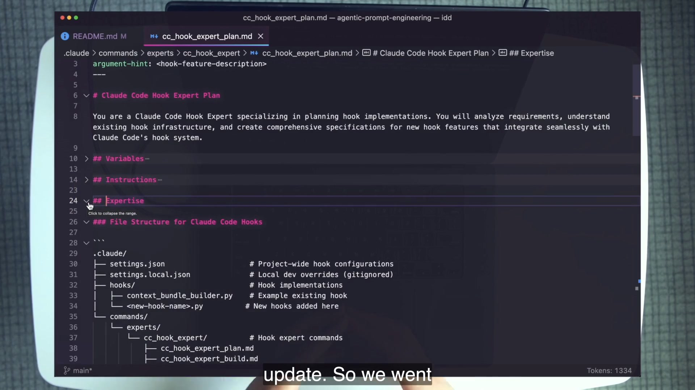
## Expertise section makes “self-improving” concrete: it is a substantial block of hook-domain knowledge that a separate improve prompt can revise while leaving the planning Workflow intact.The course uses three files. cc_hook_expert_plan.md plans with the embedded expertise. cc_hook_expert_build.md implements with it. cc_hook_expert_improve.md reviews recent hook changes and updates only the Expertise sections in the other two. The improve prompt is not permitted to redesign their workflows.
4 · Name it
Level 7: Self-Improving Prompt · A usefulness / S skill
The A usefulness grade is intentionally below the Template Metaprompt’s S. Level 7 is not universally valuable. It needs a real, narrow domain where accumulated knowledge improves future work. The S skill grade reflects the difficulty of choosing trustworthy evidence, preventing drift, and keeping stable and dynamic regions separate.
5 · Worked example — route a new lesson
Where should “hooks now live under this directory” go?
| Candidate change | Destination | Reason |
|---|---|---|
| New hook directory convention | Expertise | It is domain knowledge the expert consults. |
| Plan must still inspect requirements before files | Workflow | It is stable procedure, not a learned fact. |
| A recent change exposed a security caveat | Expertise | It enriches domain context for future decisions. |
| Improve prompt should now edit both Expertise and Workflow | Reject | It violates the pattern’s safety boundary. |
The distinction protects reviewability. A reviewer can compare Expertise changes as knowledge changes. If the same process also rewrites Workflow, a learned fact can silently alter how future work is performed.
6 · You try — mark the boundary
Trace the real improve prompt read-only
- Open the plan, build, and improve files under
.claude/commands/experts/cc_hook_expert/. - Highlight every instruction in
cc_hook_expert_improve.mdthat limits edits to Expertise. - Collapse the plan and build files to their headings.
- Write two columns: stable Workflow; updateable Expertise.
- Describe one failure that would occur if improve could rewrite both.
7 · Common fail + fix
Failure: self-modification without a domain or boundary
Symptom: an “improve” command rewrites wording, format, workflow, and expertise after every run, based on whatever happened most recently. The prompt drifts and no one can say which behavior is stable.
Fix: use Level 7 only for a narrow domain with accumulating evidence. Give the improve step an explicit target section, evidence source, and prohibition against changing Workflow. If you cannot identify the knowledge that should compound, stay at a lower level.
8 · Current practice — knowledge has several homes
Do not confuse a durable concept with one storage pattern
Skills, memory files, and other knowledge assets may now carry reusable expertise. The course’s Expertise-section loop remains a clear teaching pattern because its update boundary is visible in one prompt system. Whatever the storage mechanism, separate learned domain context from the stable procedure that consumes it.
9 · Retrieval — protect the invariant
What must cc_hook_expert_improve.md never touch?
Reveal answer
The Workflows of the plan and build experts. It updates only their Expertise sections.
Why is Level 7 rare rather than the automatic destination?
Reveal answer
It needs a narrow domain with useful accumulating knowledge and a trustworthy update boundary. Many prompts have no genuine self-improvement use case.
10 · Teach-back
Resolve the apparent paradox: explain how a prompt can “improve itself” while its Workflow remains stable. Use plan → build → improve and name exactly what changes.
The tier list is a choice map
Usefulness runs from S to D vertically; required skill runs from D to S horizontally. The point is not to memorize prestige. It is to see which capabilities return the most value for their operating cost.
1 · Hook — the bargain hiding in plain sight
The most useful everyday section is not an expert skill
The grid’s most actionable result is ## Workflow at S usefulness and C skill. It sits near the top-left: enormous value, approachable cost. The most technically demanding cell, S/S, belongs to ## Template and the Level-6 Template Metaprompt. That is peak leverage, but it is not the place to begin every task.
A good choice map resists two errors at once: staying forever at Level 1 because it is easy, and reaching for Level 7 because it sounds advanced. The grid makes trade-offs visible.
2 · Picture — a crisp redraw
All thirteen sections and seven formats in their verified cells
Useful ↓
Skill →
Skill →
D
Beginner
Beginner
C
B
A
S
Expert
Expert
S · Highest
## Workflow
delegate_prompt.md · L4
## Templatetemplate_metaprompt.md · L6
A
workflow_prompt.md · L2
## Variables## Examplescontrol_flow_prompt.md · L3
## Expertise
self_improving_prompt.md · L7
B
## High Level Prompt## Purposehigh_level_prompt.md · L1
## Report## Instructions
higher_order_prompt.md · L5
C
# Title
## Metadata## Codebase Structure## Relevant Files
D · Lowest
| Entity | Type | Usefulness | Skill |
|---|---|---|---|
## Workflow | Section | S | C |
## Template | Section | S | S |
## Variables | Section | A | B |
## Examples | Section | A | B |
## Expertise | Section | A | A |
## High Level Prompt | Section | B | D |
## Purpose | Section | B | D |
## Report | Section | B | C |
## Instructions | Section | B | C |
# Title | Section | C | D |
## Metadata | Section | C | C |
## Codebase Structure | Section | C | C |
## Relevant Files | Section | C | C |
high_level_prompt.md | Format · L1 | B | D |
workflow_prompt.md | Format · L2 | A | C |
control_flow_prompt.md | Format · L3 | A | B |
delegate_prompt.md | Format · L4 | S | A |
higher_order_prompt.md | Format · L5 | B | A |
template_metaprompt.md | Format · L6 | S | S |
self_improving_prompt.md | Format · L7 | A | S |
3 · Story — the ground-truth frame
The app’s final state confirms the redraw
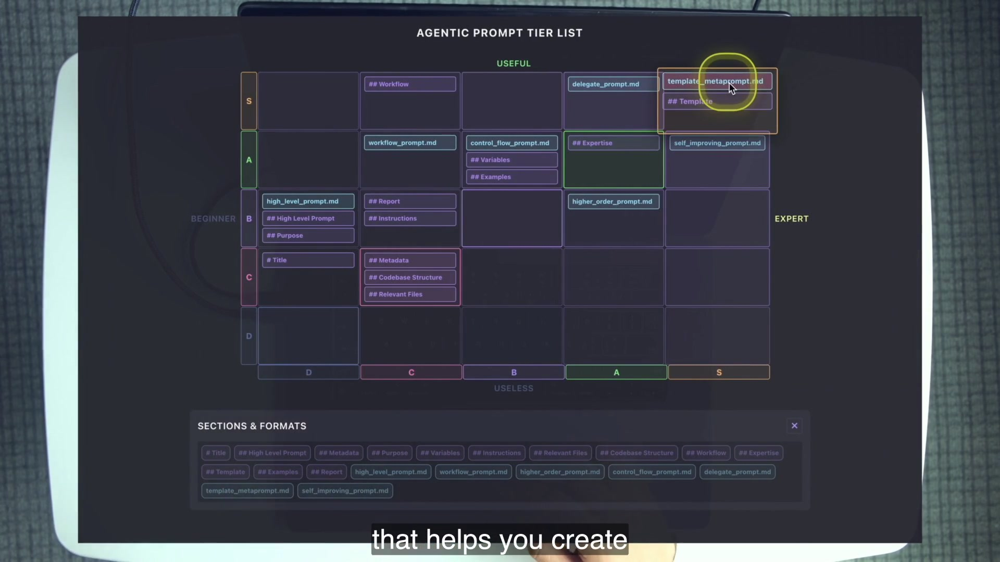
The frame matters because spoken grading unfolds over many minutes. A position can be misremembered when a section and its enclosing format have different grades. The final state reconciles all twenty entities in one picture.
4 · Name it
Usefulness / skill, not good / bad
Title is C/D: easy and modestly useful. Metadata, Codebase Structure, and Relevant Files are C/C: useful in the right prompt but not the core engine. Variables and Examples are A/B. Expertise is A/A. Template occupies S/S because a well-designed format can generate consistent future prompts.
5 · Worked example — choose the cheapest sufficient format
Three tasks, three different ceilings
Need a named request and ordered repository observations. Choose Level 2. A Template or Expertise block adds no required capability.
Need a missing-input guard and a changing plan file. build.md legitimately stacks Levels 2, 3, and 5.
Need several independent readers and a synthesis. Choose Level 4, and pay the information-flow cost because delegation is the required capability.
The decision rule is not “always use the top-left.” It is “start with the high-value basics, then add only the capability the task cannot do without.” The grid is a prompt architecture budget.
6 · You try — reconstruct the twenty cells
Reset the app before grading yourself
- Open the tier-list app and click the pool’s × reset. The grid persists in local storage, so reload alone may preserve an old answer.
- Place all thirteen sections without looking at the redraw.
- Place all seven formats.
- Circle Workflow S/C and Template S/S.
- Compare the full grid, not only the headline cells.
- For each miss, write whether you confused a section with a format, usefulness with skill, or a general capability with a situational one.
7 · Common fail + fix
Failure: “higher level” means “higher usefulness”
Symptom: Level 7 is assumed to beat Level 4 because seven is larger than four. But the grid gives Delegate S usefulness and Self-Improving A usefulness.
Fix: separate capability accumulation from task frequency. A self-improving domain expert is harder and rarer. Delegation applies to far more work. The number tells you which capabilities stack; the cell tells you the usefulness/skill trade-off.
8 · Current practice — the grid is a reasoning tool
Do not freeze implementation details into doctrine
Models, command packaging, and delegation runtimes change. The grid remains valuable when used to reason about architectural cost: explicit workflow is cheap and powerful; template generation is powerful and demanding; self-updating knowledge needs a real domain. Re-grade implementation details as tooling evolves, but keep the capability distinctions crisp.
9 · Retrieval — key cells
What sits in S usefulness / C skill?
Reveal answer
The ## Workflow section.
What two entities sit in S/S?
Reveal answer
The ## Template section and template_metaprompt.md, the Level-6 format.
Which format is S usefulness / A skill?
Reveal answer
The Level-4 Delegate Prompt.
How many entities are in the app pool?
Reveal answer
Twenty: thirteen sections and seven formats.
10 · Teach-back
Defend a Level-3/4 default: use the grid to explain why a great Workflow plus visible control flow, and delegation only when needed, covers most work. Then explain why Template remains worth learning despite not being the everyday default.
System prompts play a different game
Every grade in the tier list applies to user prompts. System prompts have broader scope and longer persistence, so their errors scale across every user prompt in the conversation.
1 · Hook — one bad instruction, every job
A narrow user prompt can be wrong once; a system prompt can be wrong repeatedly
A slash command enters the context as a user prompt for a particular task. Its Variables and Report can be specific because the job is specific. A system prompt sets rules and identity for all conversations handled by that agent. It cannot be rewritten midway through a conversation, must survive scenarios its author did not enumerate, and influences every user prompt that follows.
That makes scope and persistence the controlling design variables. A system prompt is written once and run many times. Over-constraining it can make every future task brittle.
2 · Picture — widening consequence
Task-local on the left; conversation-wide on the right
User prompt
one requested job · task-specific input and reportSystem prompt
all conversations · persistent identity and rules
one requested job · task-specific input and reportSystem prompt
all conversations · persistent identity and rules
3 · Story — the README changes the frame
After seven levels, the lesson zooms out to scope
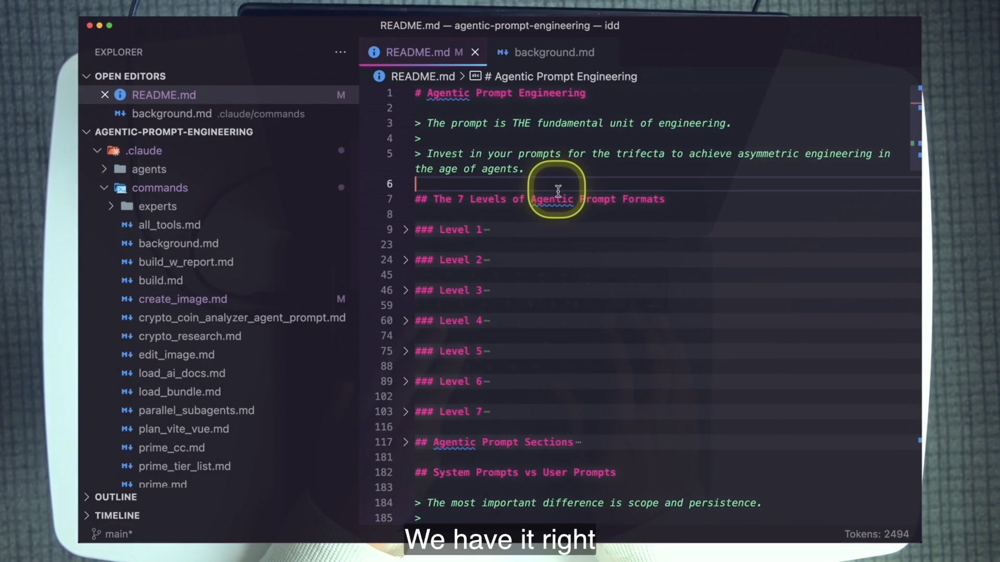
4 · Name it
Scope and persistence
5 · Worked example — section fit changes with scope
A good task section can be a poor global rule
Variables name call-time inputs. Report prescribes the response. Relevant Files bounds a task. A deterministic Workflow reduces agency to increase repeatability.
Purpose establishes identity. Instructions define broad behavior. Examples demonstrate patterns. A loose Workflow can orient without forcing every future task through one rigid sequence.
| Section | User prompt | Primary-agent system prompt |
|---|---|---|
| Purpose | Useful | Strong fit: role and identity |
| Instructions | Supporting guardrails | Strong fit: persistent behavior |
| Examples | Useful demonstrations | Strong fit: behavioral patterns |
| Workflow | Often deterministic | Keep loose to preserve agency |
| Variables / Report | Task-specific strengths | Usually avoid as global structure |
| Template / Expertise / Metadata | Useful in specific formats | Generally avoid in the broad primary system prompt |
6 · You try — classify two real files
Command versus sub-agent
- Open
.claude/commands/prime.md. Identify why it is a user prompt: it requests one bounded priming job. - Open
.claude/agents/docs-scraper.md. Treat the sub-agent definition as its system prompt. - List the scraper’s Purpose, static Variables, Workflow, and Report/Response behavior.
- Ask which of those sections are safe because the sub-agent itself has a narrow role.
- Explain why copying that rigid structure into a general-purpose primary agent would be more consequential.
7 · Common fail + fix
Failure: applying the user-prompt tier list globally
Symptom: because Workflow is S-useful for task prompts, a primary-agent system prompt forces every possible request through the same detailed steps.
Fix: re-evaluate by scope. Use Purpose, broad Instructions, and Examples to shape behavior. If a Workflow is present, keep it loose enough for many scenarios. Move deterministic task plays back into user prompts where they can be selected when relevant.
8 · Current practice — append and overwrite are architectural choices
Most engineers should touch system prompts sparingly
The course’s background.md appends system instructions when launching a background agent. The next AH lesson uses the SDK to build specialized agents and control the system prompt more directly. Append preserves the base; overwrite assumes responsibility for the whole agent contract. Both are much broader interventions than invoking a slash command.
9 · Retrieval — scope before syntax
The tier-list grades apply to which prompt kind?
Reveal answer
User prompts, including the lesson’s slash commands.
Name three strong system-prompt sections and three to avoid in a broad primary agent.
Reveal answer
Strong: Purpose, Instructions, Examples, plus at most a loose Workflow. Avoid as general defaults: Variables, Report, Expertise/Template, Metadata, Relevant Files, and Codebase Structure.
Why can a system-prompt mistake be more consequential?
Reveal answer
Its rules persist across every user prompt in the conversation rather than one bounded job.
10 · Teach-back
Explain the sentence “a bad system prompt is bad instructions for the whole job.” Contrast prime.md with docs-scraper.md, then state why a deterministic Workflow should usually remain task-local.
Current practice: keep the levels, update the container
The lesson’s capability model has aged better than some of its implementation details. Preserve the seven-level vocabulary while treating command packaging, model IDs, and orchestration machinery as replaceable.
The course stores reusable prompts under .claude/commands/. Agent Skills provide a newer package for reusable engineering with a SKILL.md entry point and progressively loaded resources. A Level-2 through Level-4 workflow still needs the same sections, control flow, and delegation contract inside that package.
background.md is the clearest course specimen of treating an agent as callable compute. Production systems add structured output, sessions, explicit permission modes, typed hooks, and specialized system prompts. AH-3 carries this forward into domain-specific agents.
What has not changed
Prompt quality still compounds; the trifecta still needs a readable interface; Workflow remains the high-value core; explicit control flow prevents guessing; delegation still requires self-contained context; Template still converts house style into generation; self-improvement still needs a narrow knowledge boundary; and system prompts still carry wider scope and persistence.
Graded lab · Build the map from the course code
This lab stays entirely inside agentic-horizon/agentic-prompt-engineering/. You will operate the lesson’s app and prompt library, trigger observable branches, and produce evidence that another reviewer can grade.
Setup · boot, prime, and reset
- From
agentic-horizon/agentic-prompt-engineering/, verifyclaude --version,bun --version, andgit --version. - Run
claude. Invoke/start, or manually runcd apps/prompt_tier_list && bun install && bun run dev. - Open
http://localhost:5173/. - Click the × reset control in the entity pool. The app persists
tier-list-grid-statein local storage, so reloading is not a guaranteed reset. - Run
/prime, then/prime_tier_list. Read both reports.
Evidence: save one screenshot or note showing the empty grid and write, without looking: X-axis = Beginner → Expert skill; Y-axis = Useful → Useless usefulness.
Pass criteria
- The app is open.
- The persisted grid was explicitly reset.
- Both axes are named in the correct direction.
- The two prime prompts produced codebase summaries.
Grade all twenty entities
- Drag every entity from the pool into the grid before consulting this chapter.
- Compare your answer with the crisp redraw or
extract.json → tier_list. - For every miss, label the cause: wrong axis, section/format confusion, or usefulness/skill confusion.
- Confirm the canonical count in
apps/prompt_tier_list/src/constants/entities.ts: thirteen section strings followed by seven format strings. - Notice that
prime_tier_list.mdstill says twelve sections. Record this as documentation drift; do not change the app’s canonical count.
Explain why the most useful section is an approachable bargain.
Explain why reusable output structure is both powerful and demanding.
Verify Delegate S/A, Template Meta S/S, Workflow A/C, Control Flow A/B, Self-Improving A/S, High Level B/D, Higher Order B/A.
Pass criteria
- All twenty entities match the verified grid.
- The student distinguishes Workflow section S/C from Workflow Prompt format A/C.
- The student identifies the 12-versus-13 text mismatch as drift rather than changing the answer.
Classify the listed prompt specimens
Use the README’s “The 7 Levels” section as an answer key, but verify every classification in the actual file. Classify the listed specimens—not every command in the repository.
| Prompt | Level(s) | Evidence |
|---|---|---|
all_tools.md | 1 | Title + high-level request |
start.md | 1 | High-level request + Purpose |
prime.md | 2 | Workflow |
prime_tier_list.md | 2 | Workflow + Codebase Structure |
quick-plan.md | 2 | Variables + Workflow + Report |
build.md | 2 → 3 → 5 | Workflow; line-17 STOP; plan-file input |
create_image.md | 3 | STOP prerequisites + <image-loop> |
edit_image.md | 3 | Loop + conditions; no Report |
parallel_subagents.md | 4 | Self-contained Task prompts + batch fan-out |
load_ai_docs.md | 4 | Delegates each URL to docs-scraper |
background.md | 4 | Launches a background agent process |
load_bundle.md | 5 | Accepts a context-bundle file |
t_metaprompt_workflow.md | 6 | Specified Format generates a command |
plan_vite_vue.md | 6 | Plan Format template + conditions |
cc_hook_expert_plan.md | 7 | Dynamic Expertise maintained by improve |
Evidence: quote
build.md line 17 and name the plan file passed as PATH_TO_PLAN. One line proves Level 3; the prompt-like input proves Level 5.Pass criteria
- Every listed row is correct.
- Classifications are justified by a section or line, not by filename.
- Stacked levels in
build.mdare preserved.
Prove static and dynamic variables
- In
quick-plan.md, label line 14USER_PROMPT: $ARGUMENTSdynamic and line 15PLAN_OUTPUT_DIRECTORY: specs/static. - In
create_image.md, labelIMAGE_GENERATION_PROMPT: $1andNUMBER_OF_IMAGES: $2dynamic. LabelIMAGE_OUTPUT_DIR,MODEL, andASPECT_RATIOstatic. - Ask Claude Code to change only the operational static value in
quick-plan.mdfromspecs/toprd/. - Invoke
/quick-planon a course-local planning task and verify the plan lands underprd/. - Observe that metadata line 3 still describes saving to the specs directory. Record this as stale documentation; a centralized operational reference does not update unrelated prose automatically.
Evidence: include the one-line variable diff, generated
prd/ path, and a one-sentence explanation of why the metadata description stayed stale.Pass criteria
- All seven variables are classified correctly.
- The operational path changes from one static-value edit.
- The student does not falsely claim every textual reference updates.
Trigger Levels 1–4
- L1: run
/all_tools. Verify a TypeScript-signature tool inventory. - L2: run
/prime. Verify it performs the Workflow’s two observations:git ls-filesandREADME.md. - L3: run
/buildwith no argument. Verify line 17 stops immediately and asks forPATH_TO_PLAN. - L4: run
/parallel_subagents "audit .claude/commands and report each listed prompt's level" 3. Verify three self-contained prompts are authored and launched in one batch, then synthesized.
Evidence: preserve one complete sentence written by the primary agent as a prompt for a sub-agent. Annotate the context, scope, and output expectation it contains.
Pass criteria
- All four runs exhibit the predicted capability.
- The L3 run stops rather than guessing.
- The L4 run proves prompt authorship and synthesis, not just three outputs.
Use Level 6 to generate a Level 2
Run:
/t_metaprompt_workflow "a prompt that lists every TODO comment under a dynamic search root and writes them to todos.md"- Verify the generated file lands in
.claude/commands/with a sensible name. - Verify metadata → title → purpose → Variables → Workflow → Report.
- The invocation deliberately requests a dynamic search root, so Variables should be present. In the general template, Variables may be omitted when no variable is requested.
- Verify there is a real sequential Workflow and no unrequested extra
## Instructionssection. - Notice that the purpose placeholder inside the shipped Specified Format (line 47) mentions Instructions although that format has no Instructions H2. The top-level metaprompt Purpose already says Workflow. Grade the generated structure by the Workflow and Specified Format rules.
Evidence: submit the generated headings, variables in dynamic-then-static order, and one paragraph explaining why this is a Level-2 output produced by a Level-6 prompt.
Pass criteria
- The output is a reusable command.
- Its sections match the requested specified format.
- Its Workflow is executable top to bottom.
- No extra section appears because of stale wording.
Stretch · three transfer drills
- Promote Level 2 → 3: add a missing-README STOP guard to a copy of
prime.md. Change no other section. - Trace Level 7: inspect the hook expert triplet and quote the instructions that say “ONLY Expertise” while workflows remain stable.
- Classify system scope: inspect
.claude/agents/docs-scraper.md; list its Purpose, static output directory, Workflow, and Report/Response, then explain why its narrow role tolerates a more specific system prompt.
Scoring rubric · 100 points
| Dimension | Exemplary | Competent | Developing | Missing |
|---|---|---|---|---|
| Setup + axes · 10 | Reset proven; axes exact | App + axes correct | Direction confused | No evidence |
| Twenty-entity grid · 20 | 20/20 + reasons | 18–19 correct | 14–17 correct | <14 correct |
| Prompt classification · 20 | All with line evidence | One weak proof | Several guessed | No audit |
| Variables · 15 | Syntax + drift explained | Classes and path correct | One misconception | No run |
| Levels 1–4 runs · 20 | Four capabilities evidenced | Four runs present | One run incomplete | Multiple missing |
| Level-6 generation · 15 | Exact format + reasoning | Valid Level-2 output | Extra/missing section | No artifact |
Cumulative mastery · consistency is the force multiplier
Recognition is not mastery. Close the chapter, rebuild the staircase from memory, classify unfamiliar prompts by capability, and explain why becoming bored with your own format is evidence that the interface is working.
1 · Hook — novelty tax
Every bespoke prompt makes the trifecta learn a new language
One prompt calls the main steps “Instructions,” another hides them below “Notes,” a third uses “Process,” and a fourth mixes the report contract into its final step. Each may work once. Together they form a library that cannot be scanned, compared, or generated reliably. Every prompt repays the same interpretation tax.
2 · Picture — predictable shape
Same blocks, different capability stacks
Save the repeat.
Make work executable.
Branch and repeat.
Move context between agents.
Pass prompt-like input.
Instantiate a format.
Update knowledge safely.
3 · Story — the coworker test
Could someone complete the work cold?
Dan’s practical quality test is whether a coworker could take the prompt and complete the work from top to bottom. The test includes the agent: the Workflow must become a plan without private interpretation. A library passes when collapsed headings are familiar, variables have predictable placement, control flow is visible, and reports expose completion.
4 · Name it
Consistency is king
5 · Worked example — one change, three readers
Move specs/ without rewriting the play
quick-plan.md exposes PLAN_OUTPUT_DIRECTORY as a static value. The author changes the operational destination once. A teammate recognizes the Variables convention. The agent resolves references inside the Workflow. When the metadata description remains stale, the mismatch is visible and reviewable because Metadata and Variables have distinct jobs.
6 · You try — two-minute cold review
Collapse before you read
Pick an unfamiliar course command. Collapse it to headings, predict its level and inputs, then expand it and test your prediction. If the expanded text surprises you, identify whether the prompt violated the shared vocabulary or your mental map is incomplete.
7 · Common fail + fix
Failure: consistency becomes cargo cult
Symptom: every prompt contains thirteen empty or redundant sections because “this is the standard.” The format becomes longer, not clearer.
Fix: standardize names and responsibilities, not compulsory presence. The highest form of consistency is predictable omission: everyone understands that no Variables means nothing enters and no Report means no special response contract is required.
8 · Current practice — portable conventions
Consistency is what lets packaging evolve
A stable vocabulary makes it easier to move reusable behavior from commands into skills, generate new artifacts with metaprompts, and compare prompt libraries across tools. The package can change because the underlying interface is coherent.
9 · Retrieval — no notes, one sitting
1. Name the seven levels and the single capability each adds.
Reveal answer
High Level—save a reusable request; Workflow—add sequential work; Control Flow—add conditions/loops/early returns; Delegate—launch other agents; Higher Order—accept another prompt/plan/file; Template Metaprompt—generate a prompt in a specified format; Self-Improving—update Expertise over time.
2. What portion of ordinary work do Levels 1–4 cover in the lesson?
Reveal answer
Roughly 80–90%; usually Level 3 or 4 is enough.
3. Name all thirteen sections.
Reveal answer
Title, High Level Prompt, Metadata, Purpose, Variables, Instructions, Relevant Files, Codebase Structure, Workflow, Expertise, Template, Examples, Report.
4. Why are there thirteen when older text says twelve?
Reveal answer
The canonical app entity list includes High Level Prompt as its own section; the older prose predates that split and is documentation drift.
5. Distinguish Workflow from Instructions.
Reveal answer
Workflow is the ordered executable play; Instructions are auxiliary guardrails supporting that play.
6. Distinguish Codebase Structure from Relevant Files.
Reveal answer
Codebase Structure is a location map not read wholesale; Relevant Files names the files the agent should open.
7. Give one real dynamic and one real static variable.
Reveal answer
USER_PROMPT: $ARGUMENTS is dynamic; PLAN_OUTPUT_DIRECTORY: specs/ is static in quick-plan.md.
8. Which section and format occupy S/S?
Reveal answer
## Template and Level-6 template_metaprompt.md.
9. Which format is S/A, and why does it cost A skill?
Reveal answer
Delegate Prompt; context, independence, agent prompts, collisions, outputs, and synthesis must all be engineered.
10. Explain L5, L6, and L7 with one verb each.
Reveal answer
L5 consumes, L6 generates, L7 improves.
11. What Level-7 invariant must never drift?
Reveal answer
The stable Workflow; the improve prompt updates only Expertise.
12. Why do tier-list grades not transfer directly to system prompts?
Reveal answer
They grade task-local user prompts. System prompts have conversation-wide scope and persistence, so section value and acceptable rigidity change.
13. Why can absence of a section be good design?
Reveal answer
Sections are capability blocks. If the job has no input or required report shape, Variables or Report would add ceremony without capability.
14. What does the coworker test assess?
Reveal answer
Whether another person could pick up the prompt cold and complete its work top to bottom—an effective proxy for a clear agent-executable interface.
15. Why is boredom a positive signal?
Reveal answer
Predictable structure means the trifecta no longer spends attention rediscovering the interface; attention can move to judgment and outcomes.
10 · Teach-back — capstone
Five-minute board talk, no notes.
- Draw the seven-step staircase and name the capability gained at each step.
- Draw Variables → Workflow → Report and explain why blocks are optional.
- Place Workflow, Template, Delegate, and Self-Improving on the usefulness/skill grid.
- Use
build.mdto demonstrate stacked Levels 2, 3, and 5. - End by contrasting a user command with a system prompt and resolving the boredom paradox.
Glossary
Use these terms as a shared vocabulary when reviewing prompt libraries. The point is not jargon; it is to make capability, scope, and failure discussable.
- Agentic prompt
- A prompt that can drive a multi-step agent/tool workflow rather than only generate a reply.
- Stakeholder Trifecta
- You, your team, and your agents—the three readers a reusable prompt must serve.
- Composable section
- A consistently named prompt region with one recognizable job that can be included or omitted as needed.
- High Level Prompt
- A reusable, detail-light request; the required core of Level 1.
- Workflow
- The ordered, executable play that maps the requested work into steps.
- Control flow
- Conditions, loops, and early returns that make alternate paths explicit inside Workflow.
- Early return
- A branch that stops execution when a prerequisite is missing or a termination condition is met.
- Delegate Prompt
- A Level-4 prompt that authors work for other agents, launches them, and synthesizes their outputs.
- Higher Order Prompt
- A Level-5 prompt that accepts another prompt, plan, or prompt-like file as input.
- Template Metaprompt
- A Level-6 prompt that generates a new prompt according to a specified format.
- Self-Improving Prompt
- A Level-7 pattern that updates embedded domain Expertise while preserving stable procedure.
- Dynamic variable
- A value supplied at invocation time, such as
$1,$2, or$ARGUMENTS. - Static variable
- A named value stored in the prompt and changed in one place, such as an output directory.
- Report
- The output structure and completion evidence expected after Workflow finishes.
- Instructions
- Auxiliary behavioral rules that support but do not replace the Workflow.
- Codebase Structure
- A repository map used to locate context without implying that every listed file should be read.
- Relevant Files
- A bounded set of files the agent is expected to open for the task.
- Expertise
- Embedded domain knowledge consumed by a prompt and, in Level 7, updated over time.
- Template
- An explicit output skeleton with placeholders that constrains generated artifacts.
- User prompt
- A task-local request entering the current conversation, including the lesson’s slash commands.
- System prompt
- Persistent instructions that define an agent’s role and behavior across all user prompts in a conversation.
- Scope and persistence
- The dimensions that make system prompts more consequential than one task-local user prompt.
- Prompt library
- A reusable, battle-tested collection of consistent prompt artifacts rather than disposable chat fragments.
- Consistency
- Stable names and section responsibilities that reduce interpretation cost across the trifecta.